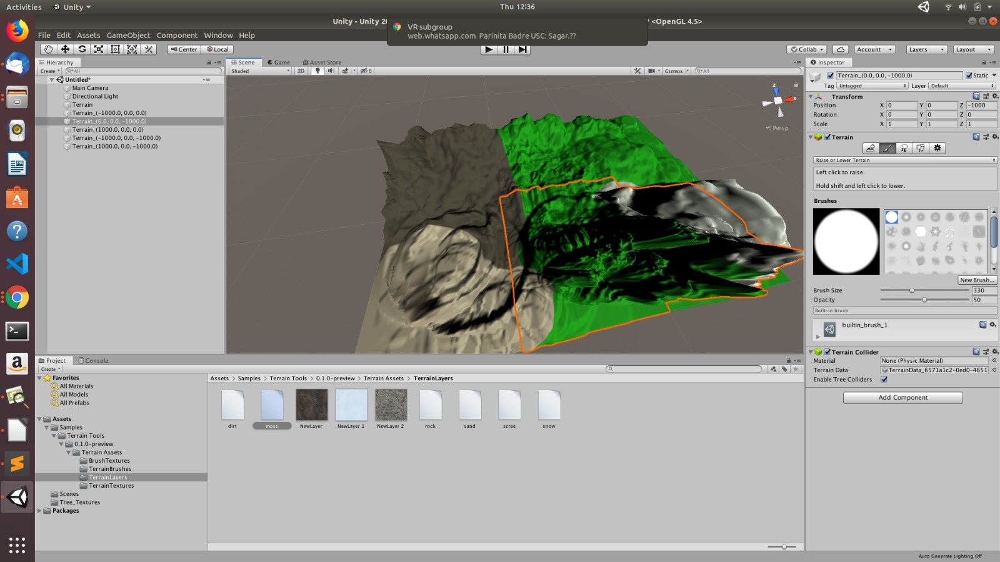

The plugins for both Unity and Unreal where configured. Using the respective plugins, the point Cloud Data was visualized in Unity and Unreal. Cloud Compare was used to crop and convert the images to their desired format.
Smaller objects where scanned using the HP Z 3D Camera. The 3D models generated where imported into the previously constructed Unity scene.
We created a scene with tree centered as the focus using Unity. We setup the HTC vive headset and tested out the SteamVR default menu. 
The point cloud data rendered in Cloud Compare has a blueish tinge associated with the image, inspite selecting the RGB component.The .ply point cloud generated data was to large to import into Unity. In order to capture a 3D Object, the HP Camera requires us to rotate the object. During the process of rotation, our fingers were captured thereby affecting the quality of the output. We’re currently facing some issues regarding the installation and integration of the AR-Plugin.
The action items for the next week.
Explore photogrammetry techniques to create 3D models using a collection of 2D photos.
View the point cloud scene in VR using HTC Vive.
Render a complete scene in VR via Vive.